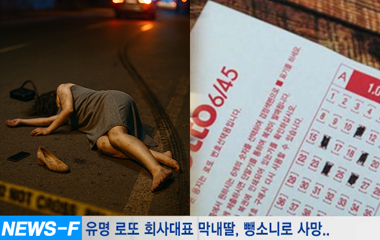
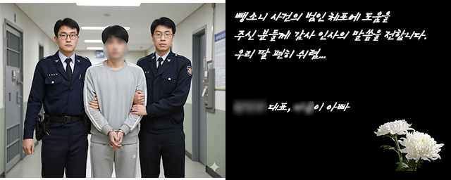

사회
최근 잔인한 뺑소니 사건… 시민 제보로 용의자 검거
피해자는 SNS에서 화제가 된 로또정보회사 대표의 막내딸로 알려졌고, 전국의 제보망이 촘촘히 가동되며 사건은 급물살을 탔습니다. 대표는 감사의 뜻으로 번호 추천 이벤트를 진행합니다.
핵심 요약
- 전국 단위 시민 제보로 용의자 신속 검거
- 로또 번호 추천 이벤트, 추모·감사 취지로 진행
- 참여는 본문 하단 ‘번호 받기’ 패널에서 가능

피해자는 23세의 여대생으로 유명 로또정보회사 대표의 막내딸로 밝혀져 안타까움을 자아내고 있다. 故한아름(가명)씨는 우리나라 최초의 로또정보회사(로또 당첨번호를 예측하는 회사)를 설립한 한상수(가명)씨의 막내딸로 미모와 재력으로 SNS에서 화제가 된 적이 있다.
<가해자 체포와 한상수 대표의 감사 글>

뺑소니 사건으로 가해자 체포가 어려웠지만 한상수씨를 통해 로또 1등에 당첨된 43명 당첨자들의 도움으로 범인을 체포하기도 해 다시 한 번 사람들을 놀라게 했다.
이에 한상수 대표는 감사의 마음을 전달하기 위해 무료로 로또번호를 추천해 주는 이벤트를 열었다. 아래 패널을 통해 참여 가능하다.
전체댓글 총 25개